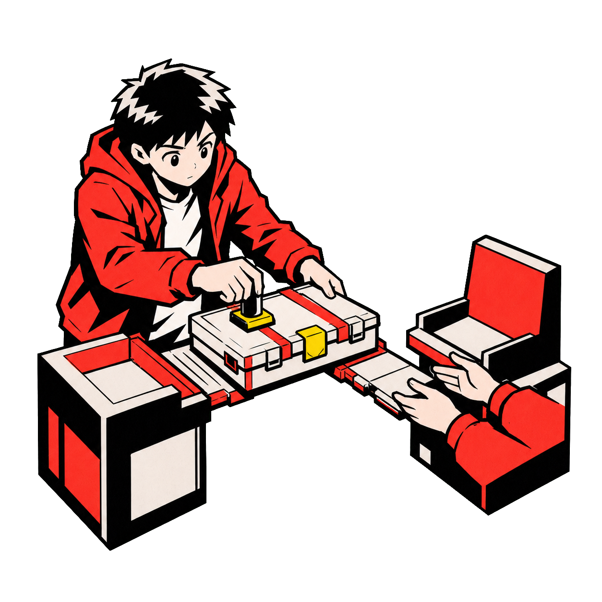

Context, work, checks, handoffs, and recovery are the standing system criteria.

Checked handoff
Move the context with the work.
A useful handoff preserves what happened, what was checked, what remains uncertain, and who owns the next decision.